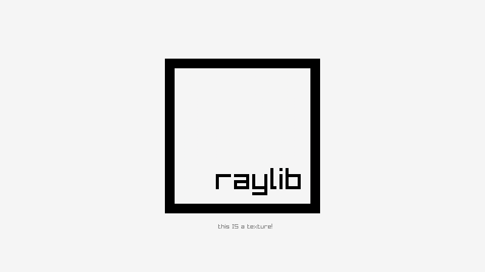
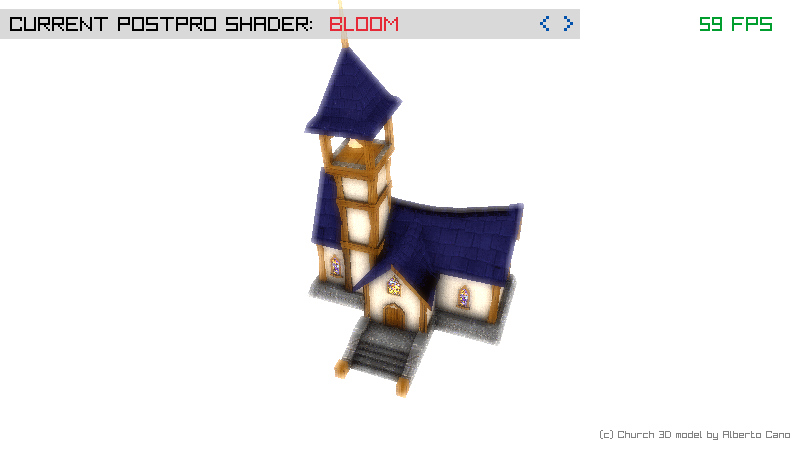
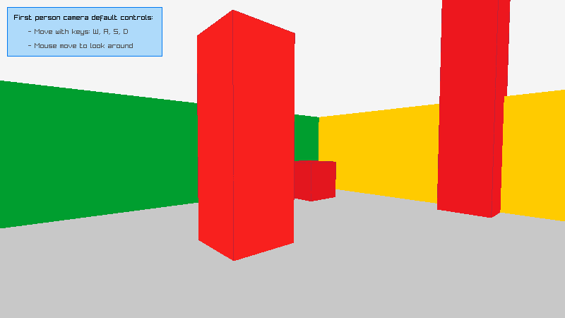
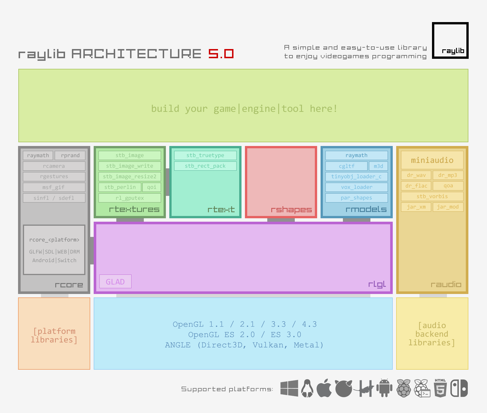

Examples
raylib in Action
Click any image to view it full-size. All images are from the official raylib examples repository.

Basic Shapes
Demonstrates all 2D shape primitives: rectangles, circles, triangles, lines, polygons. Each can be filled, outlined, or gradient-filled. Collision detection available for all shapes.
rshapes

Texture Loading
Load PNG/JPG/BMP images, upload to GPU as textures, draw with transformations (rotation, scale, tint). Supports mipmaps, filtering modes, and render textures for offscreen drawing.
rtextures

3D Model Loading
Load OBJ, GLTF, IQM, VOX, and M3D models. Apply materials and textures. Supports skeletal animation, mesh generation, and multiple camera modes (free, orbital, first-person, third-person).
rmodels

Post-Processing Shaders
Custom GLSL fragment shaders applied as full-screen post-processing effects. Bloom, blur, pixelation, cross-hatching, dream vision, and more. Render to texture, then apply shader to the texture.
shaders

Font Loading & Text Rendering
Load TTF/OTF fonts with custom glyph ranges. Supports SDF (Signed Distance Field) fonts for smooth scaling at any size. Built-in default font means you can draw text without loading anything.
rtext

First-Person 3D Camera
Built-in camera system with first-person, third-person, free, and orbital modes. WASD movement, mouse look, collision-ready. Just call UpdateCamera() each frame.
rcore
Architecture
How It All Fits Together
The official raylib v5.0 architecture diagram showing all modules and their relationships.

raylib v5.0 Architecture
Seven modules (rcore, rshapes, rtextures, rtext, rmodels, raudio, rlgl) sitting on top of platform backends (GLFW, SDL, RGFW, native). External dependencies are minimal: GLFW for windowing, miniaudio for sound, stb libraries for image/font loading — all bundled and compiled together.
Community
Made with raylib
The raylib community has produced hundreds of games, tools, and experiments. Some highlights from the ecosystem:
Game Jams
raylib is a popular choice for Ludum Dare, GMTK, and itch.io game jams. Its fast compile times and simple API make it ideal for 48-hour prototypes.
University Courses
Used in game programming courses at universities across Europe and the Americas. Ramon's original use case — teaching — remains one of raylib's strongest applications.
Commercial Tools
Level editors, pixel art tools, animation tools, and visualization software have all been built on raylib. The permissive license makes commercial use trivial.
Language Bindings
60+ community-maintained bindings: raylib-go, raylib-rs (Rust), raylib-py, raylib-zig, raylib-lua, raylib-cs (C#), raylib-java, and many more.